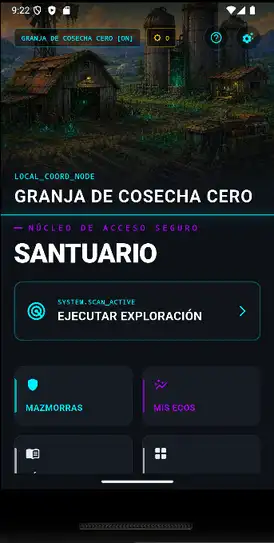
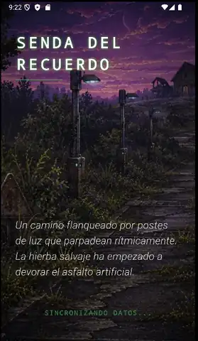
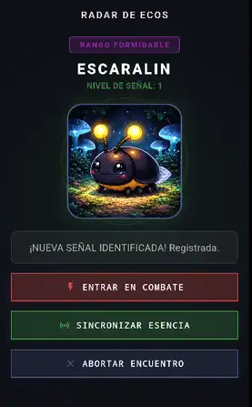
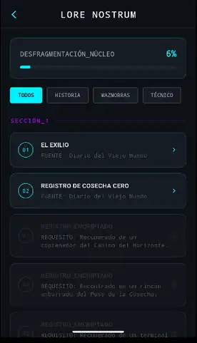
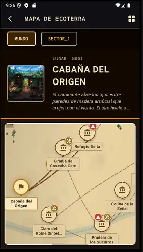
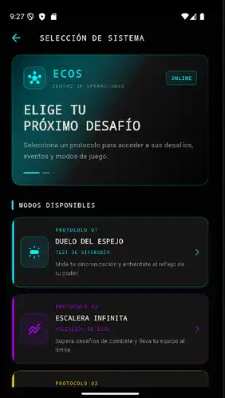
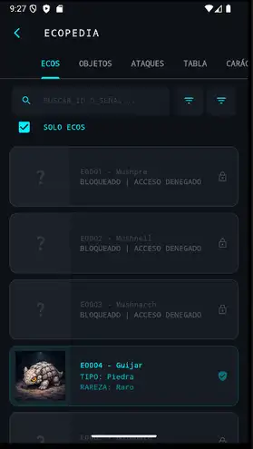

Un mundo por descubrir. Criaturas por conocer. Aventuras por vivir.
Ecos nace de la pasión por los videojuegos de aventuras, la exploración y los mundos llenos de vida. Un proyecto independiente que invita a descubrir un universo habitado por criaturas únicas: los Ecos.
Cada criatura tiene sus propias características, afinidades y posibilidades. Explora, descubre nuevas especies, forma tu colección y acompaña a tus Ecos en su crecimiento y evolución.
Un mundo de fantasía construido poco a poco, donde la estrategia, el descubrimiento y los combates forman parte de una misma aventura.
Descubre, captura y colecciona más de un centenar de Ecos únicos, con diferentes especies, elementos y linajes. ¡Y la colección sigue creciendo!
Una enciclopedia que completar con cada descubrimiento. Consulta criaturas, características, evoluciones y descubre cuánto queda por conocer.
Recorre diferentes entornos, descubre lugares sorprendentes, encuentra criaturas y adéntrate en territorios llenos de secretos.
Haz crecer a tus criaturas, descubre sus transformaciones y explora las diferentes posibilidades de evolución.
Forma tu equipo, aprovecha las habilidades y afinidades de tus Ecos y demuestra tu estrategia frente a enemigos y guardianes.
Adéntrate en peligrosas mazmorras, toma decisiones durante la expedición, consigue recompensas y enfréntate a poderosos guardianes.
Modo Roguelike Lite para los amantes del género.
Un universo con historias, personajes, acontecimientos y secretos propios. Descubre y lee su trasfondo a tu ritmo, si quieres profundizar más allá de la aventura.
Completa objetivos, consigue recompensas, mejora tu colección y registra tus progresos mientras descubres todo lo que ofrece el universo Ecos.







🌱 Proyecto independiente de almaCodes